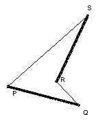

Problem B3
Given n > 2 points in the plane, prove that at most n pairs of points are the maximum distance apart (of any two points in the set).
Solution
The key is that if two segments length d do not intersect then we can find an endpoint of one which is a distance > d from an endpoint of the other.
Given this, the result follows easily by induction. If false for n, then there is a point A in three pairs AB, AC and AD of length d (the maximum distance). Take AC to lie between AB and AD. Now C cannot be in another pair. Suppose it was in CX. Then CX would have to cut both AB and AD, which is impossible.

To prove the result about the segments, suppose they are PQ and RS. We must have angle PQR less than 90o, otherwise PR > PQ = d. Similarly, the other angles of the quadrilateral must all be less than 90o. Contradiction.

Solutions are also available in: Samuel L Greitzer, International Mathematical Olympiads 1959-1977, MAA 1978, and in István Reiman, International Mathematical Olympiad 1959-1999, ISBN 189-8855-48-X.
© John Scholes
jscholes@kalva.demon.co.uk
28 Sep 1998
Last corrected/updated 26 Sep 2003